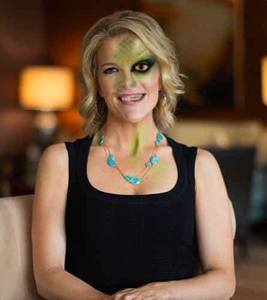

Mr. Luthra is an author and artist who writes about news, fitness, culture, and anything else that meets his interests. If you like his style, visit The Straightforward Voice, where you can find more FREE content.


Megyn Kelly has lost all relevancy. Remember her first show debut on NBC? Well, neither did anyone else. She committed career suicide by hosting disastrous interviews with Vladimir Putin and Alex Jones. Ratings for her new TV program have plummeted to laughable levels and now it’s unlikely she’ll have a respectable career in media. Here’s how she did this to herself.
Kelly played the globalist line, but Putin slammed all the false allegations claiming Russia rigged the 2016 election as a hoax.
Strongly and powerfully, he bashed all the so called “official reports” Kelly cited to him, stating that these were based on unproven invented data gathered from public, not official, sources. There was no evidence proving that Russia was involved in interfering with the American presidential election.
Recently, a CNN supervisor admitted the whole Trump Russian collaboration is BS.
The jig is up folks, and now CNN is facing a possible $100 million dollar lawsuit over the fake story.
Kelly tried to trip up Putin with prefabricated scripts provided by the dark shadow goons in NBC, but instead it completely backfired as the Russian president made her look like a fool.
Desperate, she then tried to get India’s Prime Minister Narendra Modi involved, asking for his comment, but that didn’t work either. India and Russia have a strong relationship; there was no way they were going to let some bimbo compromise that.
Did Megyn really think she could turn them against each other?
Both men, along with other leaders and millions watching around the world, couldn’t stop laughing at Kelly’s foolish accusations. Indeed, it was a rare site to see Putin laugh this much.

Jones’ recording of a pre-interview reveals that Kelley lied about the date of the show airing, the context of the interview, and about refraining from a smear campaign. Well, as expected, it was everything she promised NOT to do.
And the ratings reveal all. People were so disgusted that viewership dropped to new lows. Everyone is on to her and even NBC knows it, which is why they attempted damage control by attacking Jones for three quarters of the show.
Look, Jones has claimed some controversial things like 9/11 being an inside job and elites creating human-frog hybrids. Still, there was no intelligent dialogue in the interview, just setup “gotchya” questions and follow up weasel phrases.
Kelly has destroyed her own career and is now paying for it. At best, she’ll find work as another stooge for some other anti-Trump media company to continue the lies. There are a few lessons to learn, especially for women.

When you sell your soul to the devil, it doesn’t matter how much makeup you put on, no amount can ever cover the demon within. It was pretty apparent during her exchange with Trump at the debate, but now her true colors are on full display.
Elites like to think they’re better than every one else, but deplorable American citizens, the majority of whom voted for Trump, place less important on nepotistic connections. Kelly’s education or net worth didn’t automatically make her show a hit.
She would have been a lot happier had she stayed home with her family. If there’s any ounce of respect and dignity left in her, she’ll do just exactly that – retire and go home.
It’s a safe bet to say that Megyn Kelly is finished. Ever since she attacked Trump at the debates, she’s been unable to bounce back no matter how many millions mainstream media spends on her.
We only have to wait a month or two more until she pulls a Kathy Griffin and blame the old white man as the source of all her troubles.
Read More: Samantha Bee And Other Globocuck Comedians Are Leading The Rise In Fake Comedy